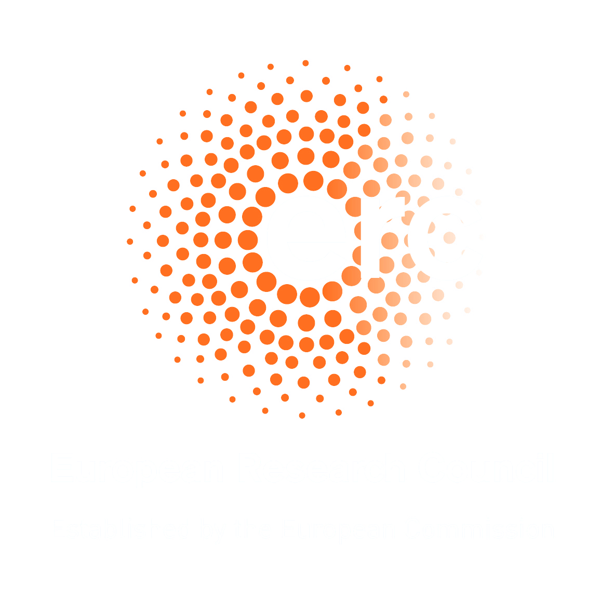
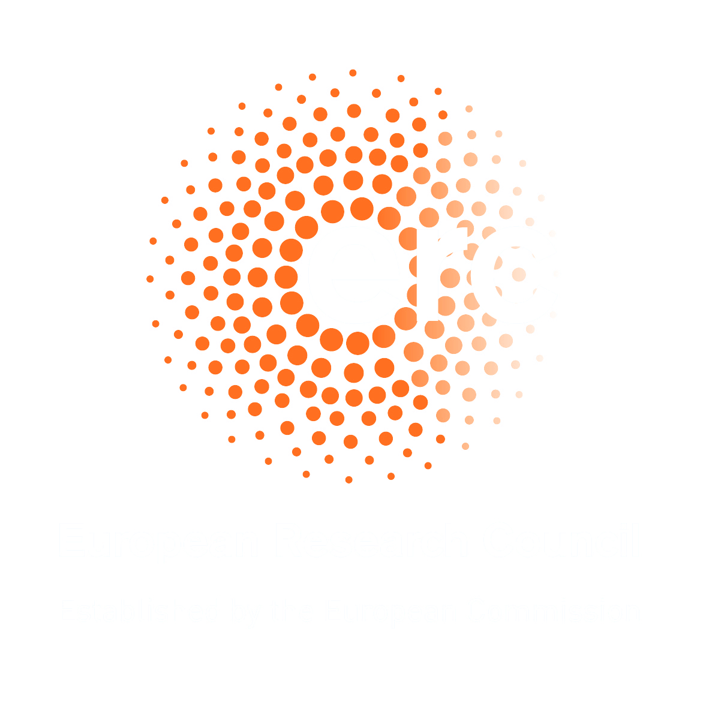

Durham Symposium 2023: Spectral gaps
7th-11th August 2023, Durham University
Aims
The goal is to produce a collaborative environment for discussions of recent developments about spectral gaps, that bring together groups of researchers with different perspectives and backgrounds.
All participants will be given fully catered accommodation at Collingwood College Durham.
Speakers
Anshul Adve (Princeton University)
Mikhail Belolipetsky (IMPA)
Sean Eberhard (Queen's University Belfast)
Sam Edwards (Durham University)
Alex Gamburd (CUNY Graduate Center)
Will Hide (Durham University)
Urban Jezernik (University of Ljubljana)
Petr Kravchuk (King's College London)
Ursula Hamenstadt (University of Bonn)
Dalimil Mazac (IAS Princeton)
Wenyu Pan (University of Toronto)
Ori Parzanchevski (Hebrew University of Jerusalem)
Bram Petri (IMJ and Sorbonne University)
Nikhil Srivastava (UC Berkeley)
Yunhui Wu (Tsinghua University)
Nina Zubrilina (Princeton University)
Organising Committee
Rhiannon Dougall (Durham University)
Michael Magee (Durham University)
Frédéric Naud (IMJ & Sorbonne University)
Doron Puder (Tel Aviv University)
Pankaj Vishe (Durham University)
Contact
durhamsymposium2023@gmail.com